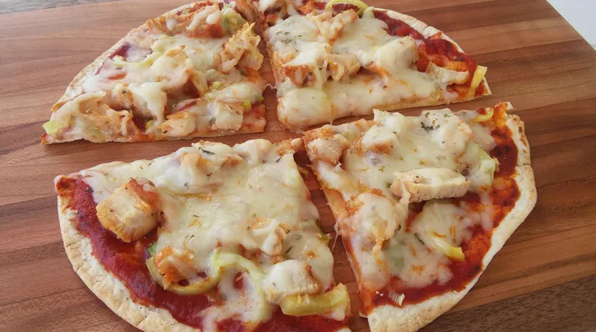

Easy Tortilla Pizza

Description
This tortilla pizza is extremely easy to make. It is light enough to be a snack, serves well as an appetizer, or is so good that it can be devoured alone!
You can use any sort of topping variation. The one below is the classic way I usually prepare it but feel free to experiment.
Ingredients
- 1 (8 inch) soft flour tortilla
- 1 teaspoon olive oil
- 1 pinch garlic powder
- salt and ground black pepper to taste
- 3 tablespoons tomato sauce
- 1 cooked chicken breast, sliced
- ½ green bell pepper, chopped
- 2 green onions, finely chopped
- ⅓ cup shredded mozzarella cheese
- 1 pinch dried oregano